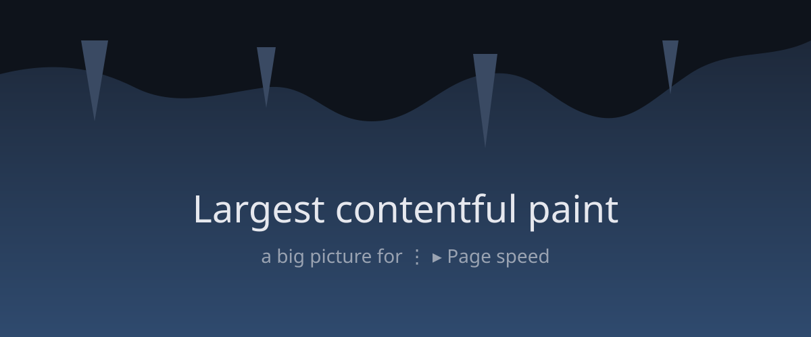

Each section tries one part of the browser. Tap the buttons, then check what it says under Check. Open DevTools with 🐞, the request list with ⇅, and the rest from ⋮.
Check: ⋮ ▸ Page info and DevTools ▸ Info show the same user agent and viewport. Turn on ⋮ ▸ Desktop site: "Looks like" switches to desktop and the page reloads.
Check: the 🐞 badge counts errors. In the Console, switch All / Info / Warning / Error: messages show straight away, without scrolling. Copy all copies what's shown; ⋮ ▸ Save console log (.txt) saves it all. After "Flood", the console should stay smooth.
Results appear here.
Check: DevTools ▸ Network lists the fetch/XHR calls with headers and bodies. ⇅ lists every request (also images, CSS, JS); failed ones are red. Tap one ▸ Copy as cURL, or Fetch response. The httpbin.org ones need internet.
Check: DevTools ▸ Resources shows the storage keys and cookies; ⋮ ▸ Cookies shows the cookies too (and lets you delete them). The IndexedDB database "testDb" appears in DevTools ▸ Resources.
Check: DevTools ▸ Elements shows the list change live; pick an element to see its styles. ⋮ ▸ View page source ▸ Live DOM shows the added items; Server source doesn't.

Check: ⋮ ▸ Page speed: after "Cause a layout shift" and ↻, Layout shift goes up (amber or red). DevTools ▸ Monitor (on first open) shows the 1 s freeze.
Link with target=_blank Long-press this link
← long-press the image
mailto: link tel: link Leave the site (example.com)
Check: target=_blank and window.open open a new tab; Back there closes it and returns here. Long-press: open in new / background / private tab, copy, share. mailto and tel open their apps.
Find in page: try searching for stalactite; it appears here and once more at the bottom.
Check: location and camera each ask once (Block is remembered). The download lands in Downloads. Fullscreen fills the screen; Back leaves it.
Check: at the top of the page, pulling down reloads it. Scroll the box above down a little, then drag it back up: it scrolls, no reload. Drawing on the pad (it handles touches itself) never reloads.